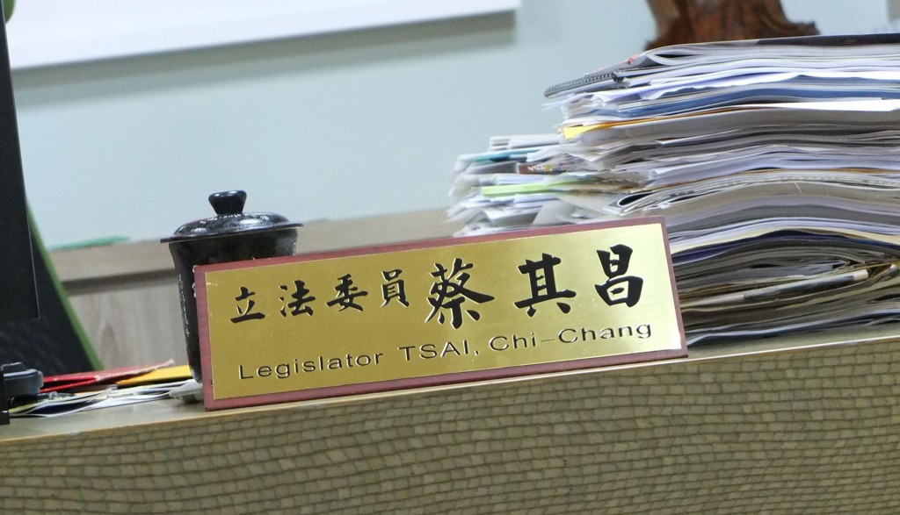

photo credit：關鍵評論網 羊正鈺
這一次，立法院再不到一百天就有機會重新洗牌了，TNL試著扮演好關鍵瞎子的角色，從不同的角度帶大家一起思考「我們該選出什麼樣的立委？」
我們用五個關鍵問題，來問剛下台的政務官、國民兩黨的黨鞭、第三勢力候選人、資深媒體人、政論節目主持人、以及青年代表，一起來看看他們的真情流露、直言無忌吧：
蔡其昌是國會助理出身，他在台中市第一選區參選3次，其中曾在第7屆落選，並在第8屆捲土重來，以54.54%的得票率重回立法院。除了被公督盟評鑑為「優質立委」，蔡其昌在國會的出席率更高達100%，除此之外，他的選民服務也做得相當紮實。
2014年6月4日，蔡其昌接任民進黨黨團幹事長（俗稱小黨鞭），除了要代表黨團發言，更要處理許多院會、委員會的各種大小事務。若大黨鞭是黨團的「班長」，小黨鞭的角色即是「副班長」，是很重要的幹部之一。
蔡其昌（文後簡稱蔡）：我相信任何一套制度都有優缺點，但掌握「公開透明」的原則，才是國會改革的最根本。
黨團協商對小黨有一定程度的保障，3人可組政團、參與黨團協商運作，讓小黨可以發揮力量。若沒了這個制度，就變成每個出委員會的案子，都必須由全院審查，勢必會更沒有效率，因此黨團協商不是沒有存在的意義，但被社會詬病的是它的「黑箱」。
蔡：一個委員會就可以讓一位委員忙翻，但再怎麼忙翻，這都屬於正式的民主程序，更是本份。
選民對民意代表的期待和現實不一定吻合，立委的本份是問政、質詢、審預算，但是我深信如果我只做好「本份」，絕對會落選，因為我的選區在偏鄉，人民對立委的「本份」是較無感的。
因此我的原則是：選區再怎麼跑都可以，但影響到本業，就不是好的立委。
蔡：年輕人要關心公共議題、了解國家整體運作，才會有正確的標準對立委做評判、知道立委扮演什麼角色。
當大家完全不了解時，可能會覺得常跑婚喪喜慶的人，才是最棒的立委。我鼓勵年輕人，多參與公共事務，這才能真正實踐「自己的國家自己救」。
蔡：有四大方向很需要全民來重視：年金、長照、轉型正義及兩岸關係。
除此之外，我也非常重視廢考監、國會改革。
蔡：當然是老柯（指柯建銘，民進黨大黨鞭），他很願意進「廚房」，做大家都不願意做的工作。
「折衝」在立法的過程非常重要，否則大家只是不斷的硬拚輸贏而已，很難真的朝進步的方向走。
另外，我也很欣賞鄭麗君委員，她對法案很執著，對自己相信的價值一直很堅持，請很多專家、助理開研討會，自己也常開各種讀書會，讓大家一起來學習。
蔡其昌：立法院不是拿來拚輸贏的，我們需要「願意進廚房」的人
採訪：羊正鈺、李牧宜
對於立法院、立委們，或許很多人都是透過報章雜誌、電視節目而認識他們。如今在網路、社群發燒之下立法院一個五秒鐘的畫面、委員們在臉書說一句話都可能因此瘋傳，但是當我們只透過片面、簡短的資訊來解讀，是否就像「瞎子摸象」一樣對我們國會最高殿堂有誤解呢？
這一次，立法院再不到一百天就有機會重新洗牌了，TNL試著扮演好關鍵瞎子的角色，從不同的角度帶大家一起思考「我們該選出什麼樣的立委？」
我們用五個關鍵問題，來問剛下台的政務官、國民兩黨的黨鞭、第三勢力候選人、資深媒體人、政論節目主持人、以及青年代表，一起來看看他們的真情流露、直言無忌吧：
《人物系列之九》民進黨黨團幹事長（小黨鞭）蔡其昌
蔡其昌是國會助理出身，他在台中市第一選區參選3次，其中曾在第7屆落選，並在第8屆捲土重來，以54.54%的得票率重回立法院。除了被公督盟評鑑為「優質立委」，蔡其昌在國會的出席率更高達100%，除此之外，他的選民服務也做得相當紮實。
2014年6月4日，蔡其昌接任民進黨黨團幹事長（俗稱小黨鞭），除了要代表黨團發言，更要處理許多院會、委員會的各種大小事務。若大黨鞭是黨團的「班長」，小黨鞭的角色即是「副班長」，是很重要的幹部之一。

Photo Credit: 關鍵評論網 羊正鈺
問題一、立法院運作到底出了什麼問題？
蔡其昌（文後簡稱蔡）：我相信任何一套制度都有優缺點，但掌握「公開透明」的原則，才是國會改革的最根本。
黨團協商對小黨有一定程度的保障，3人可組政團、參與黨團協商運作，讓小黨可以發揮力量。若沒了這個制度，就變成每個出委員會的案子，都必須由全院審查，勢必會更沒有效率，因此黨團協商不是沒有存在的意義，但被社會詬病的是它的「黑箱」。
若我們把焦點放在「強化委員會」，對小黨也會產生傷害：若一個政黨只有3個委員，就只能選擇加入3個委員會。換句話說，其他5個委員會（5大領域的議題），連參與的機會都沒有。
因此我的主張是，要用最有效率的方法，將國會透明化。只要可以提升議事效率、民眾監督國會的可行性，任何一個立委都不會反對的。
- 蔡其昌
問題二、我們需要一個什麼樣的「好立委」？
蔡：一個委員會就可以讓一位委員忙翻，但再怎麼忙翻，這都屬於正式的民主程序，更是本份。
選民對民意代表的期待和現實不一定吻合，立委的本份是問政、質詢、審預算，但是我深信如果我只做好「本份」，絕對會落選，因為我的選區在偏鄉，人民對立委的「本份」是較無感的。
因此我的原則是：選區再怎麼跑都可以，但影響到本業，就不是好的立委。
問題三、選民該怎麼檢視候選人適不適任？
蔡：年輕人要關心公共議題、了解國家整體運作，才會有正確的標準對立委做評判、知道立委扮演什麼角色。
當大家完全不了解時，可能會覺得常跑婚喪喜慶的人，才是最棒的立委。我鼓勵年輕人，多參與公共事務，這才能真正實踐「自己的國家自己救」。
Photo Credit: 關鍵評論網 羊正鈺
問題四、2016年第一會期，迫切需要通過的法案有哪些？
蔡：有四大方向很需要全民來重視：年金、長照、轉型正義及兩岸關係。
除此之外，我也非常重視廢考監、國會改革。
-
廢考監：監察院和考試院都剝奪了行政院的人事權和立法院的調查權，實際的運作也沒有具體貢獻。
-
在立法院內，我們可以看到「勇猛的質詢」，但又如何？質詢完要求官員提供資料，但如果對方不提供，立委一點辦法都沒有。
因為他沒有「調查權」，光是想要調閱什麼資料，還要成立調閱委員會，經過決議才可以調閱。因此我主張修憲，把調查的權責劃分清楚。但立法院是人民的立法院，立委的產生，是因為人民沒時間來開會，所以才把票投給候選人，請他們去幫人民開會的。站在這個角度，為什麼人民陳情、抗議必須去中山南路，車水馬龍的抗議？立法院為什麼對來旁聽的人民都這麼不友善呢？我們的議場是一個石器時代的會場，台灣號稱自己是科技國，其實一點都不科技啊！
- 蔡其昌
我們必須把委員會議場公開，在不干擾議事作業的前提下，讓人人都可以參與。我們談國會改革，從修憲層次到細小的開會場所，都跟最基本的價值有關。如果人民不支持這些進步的概念，就只會選出一些怠惰的立委。
-
在立法院內，我們可以看到「勇猛的質詢」，但又如何？質詢完要求官員提供資料，但如果對方不提供，立委一點辦法都沒有。
問題五、現任立委中哪位是您心目中印象最深刻？
蔡：當然是老柯（指柯建銘，民進黨大黨鞭），他很願意進「廚房」，做大家都不願意做的工作。
廚房裡一定是充滿油煙的，在餐廳（立法院）裡，員工（立委）都只想選擇輕鬆、光鮮亮麗的工作做。但是，老柯的精神總是「沒有人要做，我願意做。」也一直都是擔任那個挺身而出的人。
事實上在立法院內，每個法案都代表不同階級、不同人的聲音和利益，各個委員都必須用很審慎的態度、再三考慮各方想法，但在這個背後，最需要有人跳出來溝通協調、折衝。
- 蔡其昌
「折衝」在立法的過程非常重要，否則大家只是不斷的硬拚輸贏而已，很難真的朝進步的方向走。
另外，我也很欣賞鄭麗君委員，她對法案很執著，對自己相信的價值一直很堅持，請很多專家、助理開研討會，自己也常開各種讀書會，讓大家一起來學習。
責任編輯：李牧宜
核稿編輯：楊之瑜
核稿編輯：楊之瑜
SHARE：